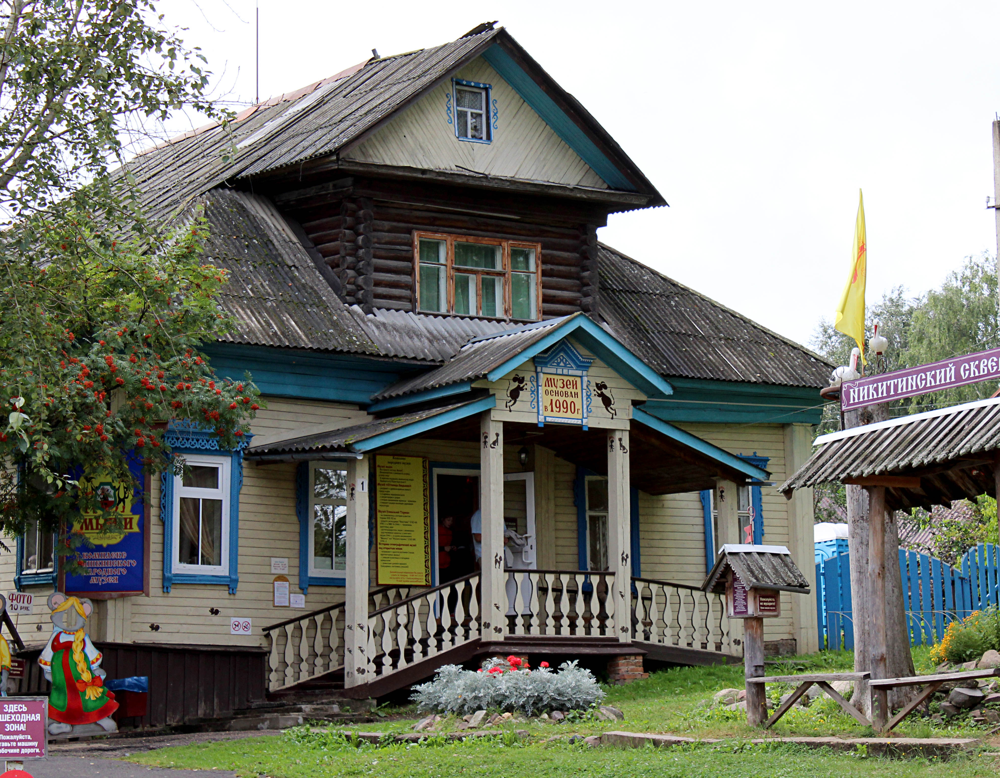
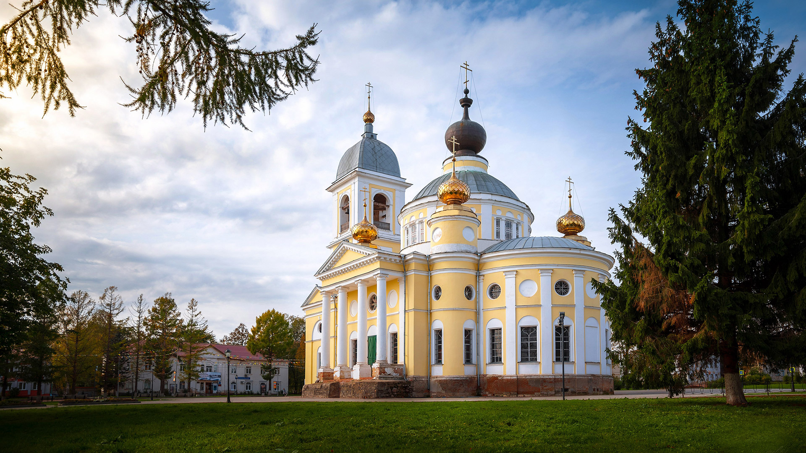

Мышкин
Мышкин – уникальный небольшой русский город, который сохранил старинные купеческие постройки и размеренный уклад жизни российской провинции. Одним из несомненных достояний Мышкина является его неизменный старинный облик и уникальные природные ландшафты. Примечательно, что Мышкин расположен на левом, высоком берегу Волги на 6 холмах в окружении густых лесов и сосновых заповедных боров, на западе Ярославской области.

Музей мыши — единственный в мире музей, посвященный мышам. Он стал одним из символов небольшого города Мышкина. Музей разместился в одноэтажном бревенчатом деревянном доме, на уступе Никольской горы. Неподалеку от здания музея расположен «Дворец мыши» или «Мышкины палаты». Выставленные коллекции занимают четыре зала, и здесь можно увидеть множество фигурок мышей, выполненных из разных материалов.

Собор Успения Пресвятой Богородицы — один из старейших соборов города Мышкина. После присвоения Мышкину статуса города в 1777 году был разработан новый план его застройки. Согласно этому плану, собор Успения Пресвятой Богородицы должен был возвышаться над остальными зданиями города. Грандиозный для уездного города проект разработал итальянский архитектор Иоганнес Манфрини. Его заложили в 1805 году на пологом холме, в центре большой торговой площади.
